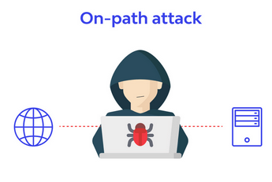
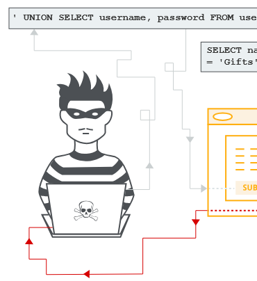
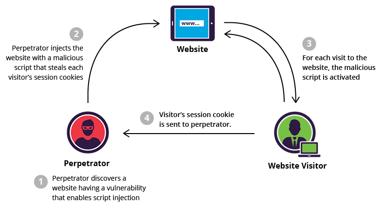
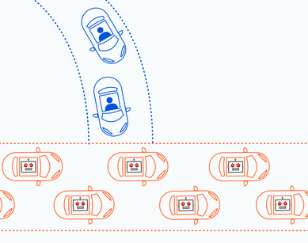
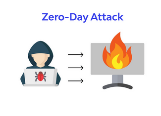
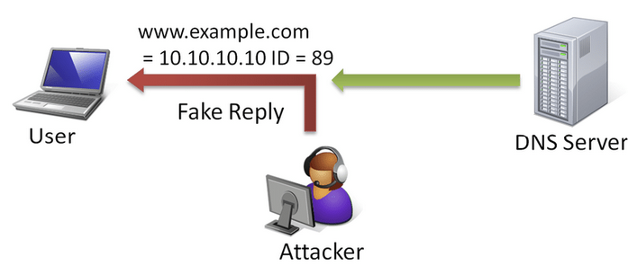
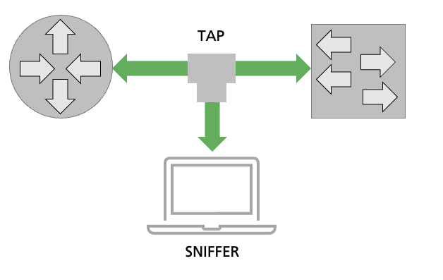

| Activity | Date |
|---|---|
| Enrolments open (continuing students) | 18th November 2024 |
| Enrolments open (commencing students) | 2nd December 2024 |
| Enrolments open (continuing students) | 18th November 2024 |
| Orientation day for new students (Sydney) | 3rd February 2025 |
| Orientation day for new students (Wollongong) | 4th February 2025 |
| Orientation day for new students (Online) | 5th February 2025 |
| Lectures commence | 10th Feb - 18th April 2025 |
| Last day to enrol / add subjects yourself | 21st February 2025 |
| Last day to enrol / add subjects with Head of Students approval | 28th February |
|
CENSUS DATE
|
3rd March 2025 |
| Student Services and Amenities Fees due | 4th March 2025 |
| Last day to withdraw without academic penalty | 21st March 2025 |
| Name | Description (my own) |
| Brute Force Source: https://content.kaspersky-labs.com |
Where the threat actor persistently tries different logins/passwords to gain unauthorised access to a system. This could be done manually, but typically an automated script runs, with the capacity to check large volumes of user/password combinations. A common example are wireless security cameras, which have a default username and password. These are publicly available online for the different manufacturers and models. Most people don't bother changing these default settings, leaving them vulnerable to brute force attacks of their security monitors. |
| On-Path attack  Source: https://www.wallarm.com/what/what-is-an-on-path-attacker |
Traditionally known as a Man-in-the-middle (MitM) attack, this involves a threat actor intercepting network communication between two or more systems. The threat actor intercepts network packets and can interrogate the contents (this is known as packet sniffing). The threat actor's system masks as the IP of the recipient, so the network traffic is diverted to them. To remain undetected, they can choose to allow the traffic to continue on to it's intended address. |
| SQL Injection  Source: https://portswigger.net/web-security/sql-injection |
SQL injection is where an SQL command is entered into a text field of a web form, with the view of executing the command on the backend database. This could give the threat actor access to sensitive data, and even the ability to modify or delete data. |
| Cross-site Scripting  Source: https://www.imperva.com/learn/application-security/cross-site-scripting-xss-attacks/ |
When threat actors insert malicious script into websites that compromise the security of the web page and it's behaviour. |
| Distributed Denial of Service (DDOS)  Source: https://www.cloudflare.com/learning/ddos/what-is-a-ddos-attack/ |
Denial of Service is when multiple redundant requests are sent to a web server with the malicious intention of flooding the server with requests. This results in the server being unable to process all the requests, resulting in timeouts for authentic requests from elsewhere. A distributed denial of service is like an automated version of this, where bots in different locations are utilised to perform the DOS attack. |
| Zero day exploit  Source: https://www.wallarm.com/what/explanation-of-the-zero-day-attack |
This is when a vulnerability is discovered in software by threat actors before the software developer is aware, giving them "zero days" to develop a patch for the vulnerability. |
| DNS Spoofing  Source: https://www.researchgate.net/figure/Example-of-DNS-ID-Spoofing_fig21_49459840> |
When a threat actor sets up a fake DNS entries so that network traffic is diverted to this server instead of the authentic server. |
| Packet Sniffing  Source: https://www.endace.com/learn/what-is-packet-sniffing |
Computer networks send data using packets. For example, a webpage being sent is broken up into many packets before being sent. Each packet can take an entirely different route to all the other packets. This enables packets to be sent quickly in contrast to a large file being sent via a single route. These routes can be intercepted, making the packets vulnerable to being accessed and their contents read. This is called packet sniffing. |
| Phishing Source: https://www.malwarebytes.com/phishing |
A malicious email or message that appears authentic, but has malicious intent with links that redirect the user to unauthorised websites with the intent of tricking the user into providing their PII. This could include information such as their credit card details, date of birth, bank details, username and passwords to different accounts. |
| Credential Stuffing Source: https://www.abc.net.au/news/2024-01-19/what-is-credential-stuffing-scams-how-to-prevent-and-protect/103367570 |
This is when threat actors obtain login credentials from an account or accounts and use them to try to gain unauthorised access to other accounts. |